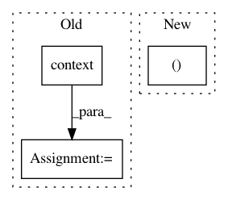

5f078112011a66a93432cb6d38c03935a10f382e,tensorly/decomposition/candecomp_parafac.py,,non_negative_parafac,#Any#Any#Any#Any#Any#Any#Any#Any#Any#Any#Any#Any#Any#Any#,427
Before Change
if normalize_factors:
weights = tl.norm(factor, order=2, axis=0)
weights = tl.where(tl.abs(weights) <= tl.eps(tensor.dtype),
tl.ones(tl.shape(weights), **tl.context(factors[0])),
weights)
factor = factor/(tl.reshape(weights, (1, -1)))
factors[mode] = factor
After Change
factors[mode] = factor
if normalize_factors:
weights, factors = kruskal_normalise((weights, factors))
if tol:
// ||tensor - rec||^2 = ||tensor||^2 + ||rec||^2 - 2*<tensor, rec>
In pattern: SUPERPATTERN
Frequency: 3
Non-data size: 3
Instances
Project Name: tensorly/tensorly
Commit Name: 5f078112011a66a93432cb6d38c03935a10f382e
Time: 2020-07-10
Author: git@ameyer.me
File Name: tensorly/decomposition/candecomp_parafac.py
Class Name:
Method Name: non_negative_parafac
Project Name: tensorly/tensorly
Commit Name: 981e8a75c8f88b4e857c440d23e44d6fd33d70df
Time: 2020-07-10
Author: git@ameyer.me
File Name: tensorly/decomposition/candecomp_parafac.py
Class Name:
Method Name: parafac
Project Name: pantsbuild/pants
Commit Name: 8975e5a40bece5a04a1f69c029d30e62e2160beb
Time: 2016-05-09
Author: kwilson@twopensource.com
File Name: tests/python/pants_test/engine/test_engine.py
Class Name: EngineTest
Method Name: setUp